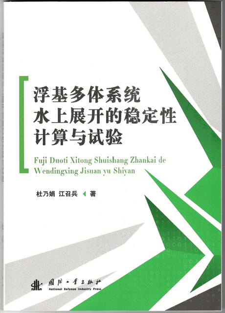

01
Engineering monograph
Stability Calculation and Experiment of a Floating-Base Multi-Body System During Water Deployment
Co-authored by Naijuan Du and Zhaobing Jiang, the book applies the homogeneous matrix method to model typical floating-base multi-body systems deployed on water and to analyse their dynamics: the homogeneous matrix formulation of multi-body dynamics, dynamic analysis of floating-base multi-body systems, modelling of the floating body system of a пмм-2 self-propelled pontoon bridge, dynamic analysis and numerical computation of its launching and deployment on water, the dynamic response of deployment in waves, and validation through a floating-base pendulum-rod test. The manuscript runs to eight chapters over 156 pages, with a preface and table of contents.
Citation
Naijuan Du, Zhaobing Jiang. Stability Calculation and Experiment of a Floating-Base Multi-Body System During Water Deployment[M]. Beijing: National Defense Industry Press, 2020. (in Chinese)